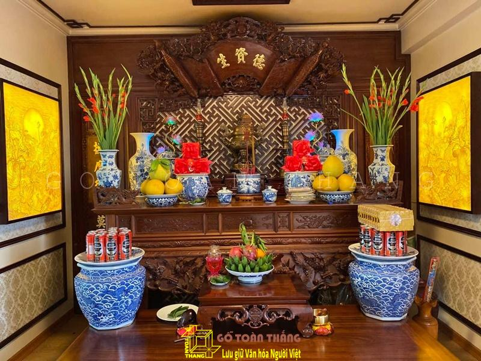
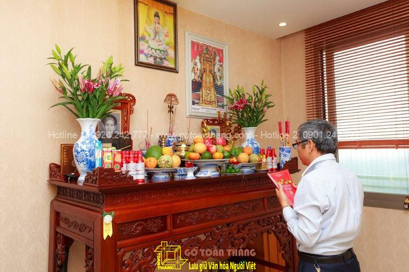
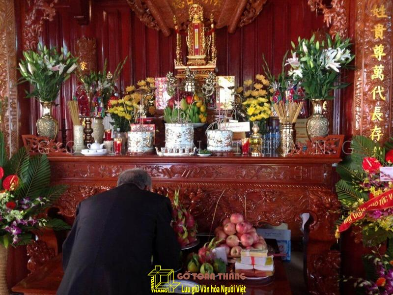
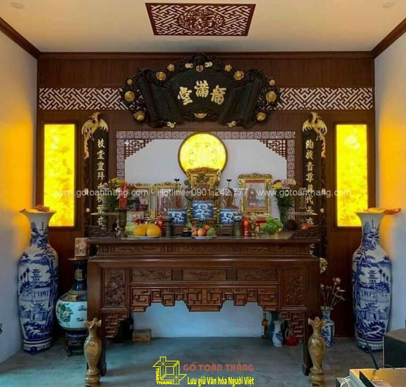

Nguồn gốc

Phong tục thờ cúng tổ tiên bắt nguồn từ niềm tin cho rằng linh hồn của người đã khuất vẫn còn hiện hữu trong thế giới này và ảnh hưởng đến đời sống của con cháu.[6] Người Việt cho rằng chết chưa phải là hết, tuy thể xác tiêu tan nhưng linh hồn bất diệt và thường ngự trên bàn thờ để gần gũi, giúp đỡ con cháu, dõi theo những người thân để phù hộ họ khi nguy khó, mừng khi họ gặp may mắn, khuyến khích họ làm những điều lành và cũng quở phạt khi họ làm những điều tội lỗi,[4] do đó cũng ảnh hưởng đến hành động và cách cư xử của những người còn sống trong gia đình, họ thường tránh làm những việc xấu vì sợ vong hồn cha mẹ buồn, đôi khi muốn quyết định việc gì đó cũng phải cân nhắc xem liệu khi còn sinh tiền thì cha mẹ có đồng ý như thế hay không.[7] Họ cũng tin rằng dương sao thì âm vậy, khi sống cần những gì thì chết cũng cần những thứ ấy, cho nên dẫn đến tục thờ cúng,[8] với quan niệm thế giới vô hình và hữu hình luôn có sự quan hệ liên lạc với nhau và sự thờ cúng chính là môi trường trung gian để 2 thế giới này gặp gỡ.
Biểu hiện
hình thức thờ cúng tổ tiên còn là biểu hiện của lòng hiếu thảo và nhớ đến công ơn sinh thành dưỡng dục của tiền nhân, nhớ đến cội nguồn của mình, đồng thời cũng là nền tảng cơ sở cho quan hệ gia đình.[10] Trong nhóm Kitô giáo thì người Công giáo Việt Nam vẫn có lập nơi tưởng nhớ tổ tiên (tạm gọi là bàn thờ)[11] với những nghi thức theo truyền thống dân tộc, nhưng họ không xem đó là hình thức tôn thờ mà là tôn kính; trái lại, nhiều người Tin Lành không làm như vậy mà họ chỉ treo di ảnh tưởng nhớ.
Các bước thực hiện nghi lễ
Trên thực tế, nghi thức thờ cúng tổ tiên là lời chỉ dạy truyền miệng từ đời này sang đời khác. Trong đó, nguyên tắc cúng – khấn – vái – lạy là các nghi thức cơ bản bắt buộc trong thờ cúng:

Nghi thức cúng
Cúng là phần nghi lễ chuẩn bị lễ vật, thắp hương, đốt đèn trên bàn thờ gia tiên. Lễ cúng thường sẽ được thực hiện trong ngày mùng 1, ngày rằm, ngày giỗ, ngày Tết….
Nghi thức khấn
Khấn là phần nghi lễ để con cháu tấu lên những điều muốn cầu xin với tổ tiên. Trong phần khấn, gia chủ cần xưng tên, ngày tháng làm lễ, nơi làm lễ, mục đích của buổi lễ, những điều cần tấu, cần xin. Gia chủ có thể khấn theo bài hoặc đơn giản là nghĩ gì tấu đó. Quan trọng nhất ở nghi thức khấn là lòng thành kính, là sự nhất tâm cầu.
Khấn là để con cháu tấu lên những điều muốn cầu xin với tổ tiên
Khấn là để con cháu tấu lên những điều muốn cầu xin với tổ tiên
Nghi thức vái
Sau khi khấn những điều cần tấu lên với gia tiên, gia chủ sẽ phải vái. Vái là thao tác đưa hai tay lên chắp trước ngực. Tiếp theo, bạn đưa tay chắp lên ngang đầu, đồng thời đầu hơi cúi và khom lưng. Cuối cùng, bạn ngẩng đầu lên. Như vậy, một thao tác vái được hoàn thành.
Nghi thức lạy
Vái và lạy là nghi thức thờ cúng tổ tiên đi cùng với nhau. Nghi thức này là để bày tỏ lòng tôn kính với tổ tiên, người thân quá cố. Tùy vào từng lễ cúng, gia chủ có thể lạy 2 lạy, 3 lạy, 4 lạy hoặc 5 lạy. Ý nghĩa cụ thể của từng trường hợp là:
2 vái và 2 lạy: Áp dụng trong trường hợp phúng điều người mất là vai dưới như: em, con cháu… 2 vái còn được sử dụng trong trường hợp là con cháu thể hiện lòng hiếu kính với người sống là bề trên trong các dịp đặc biệt.>
3 vái và 3 lạy: Áp dụng trong trường hợp lễ Phật. 3 vái 3 lạy này là tượng trưng của Phật – Pháp – Tăng. Phật là giác ngộ mọi lẽ, Pháp là chính đáng, không tà ngụy. Tăng là thanh tịnh, không nhơ bẩn.
4 vái và 4 lạy: Vái lạy khi cúng lễ người thân quá cố và thánh thần, thần linh.
5 vái và 5 lạy: Nghi thức này để lạy Vua 5 lạy trong lễ giỗ tổ Hùng Vương.

Ý nghĩa
So với những tín ngưỡng khác, nghi thức thờ cúng tổ tiên khá bình dị và không mang tính chất cực đoan. Việc thờ cúng tổ tiên là sự thế tục, là nếp sống đã ăn sâu vào tiềm thức của người Việt.
Thờ cúng tổ tiên là cách để con cháu thể hiện sự hiếu kính với ông bà, tổ tiên. Thêm vào đó, việc này cũng là cách để các thế hệ trước giáo dục truyền thống cho thế hệ sau. Đây cũng chính là ý nghĩa quan trọng nhất của việc thờ cúng là đạo lý “Uống nước nhớ nguồn’’.
Khi thờ cúng, con cháu sẽ cầu xin tổ tiên phù trợ, che chở để nhận được bình yên, an nhiên trong cuộc sống. Tuy việc cầu xin này chưa thể khẳng định có hiệu quả hay không nhưng ý nghĩa thờ cúng gia tiên mang đến giá trị tinh thần là vô cùng to lớn. Về mặt tâm linh, con cháu sẽ cảm thấy thanh thản và có chỗ dựa tinh thần vững chắc.
Thờ cúng tổ tiên là để thể hiện lòng thành kính của con cháu
Thờ cúng tổ tiên là để thể hiện lòng thành kính của con cháu
Theo quan niệm của người Việt, người mất sẽ đi đến một cõi khác. Với việc thờ cúng, con cháu sẽ luôn cảm thấy sự hiện hữu của các linh hồn người thân đã khuất ở bên cạnh. Tổ tiên được thờ cúng cũng sẽ không trở thành ma đói, quỷ đói. Thay vào đó, gia tiên sẽ mách bảo và phù trợ cho con cháu có được cuộc sống thuận hòa, an nhiên.

Nguồn gốc
Tín ngưỡng thờ cúng Hùng Vương bắt nguồn từ Tín ngưỡng thờ cúng tổ tiên, một trong những tín ngưỡng đặc thù, có vị trí hết sức đặc biệt trong đời sống tinh thần và là một trong những thành tố tạo nên bản sắc văn hóa độc đáo của cộng đồng các dân tộc Việt Nam. Trải qua bao biến cố của lịch sử, Tín ngưỡng thờ cúng tổ tiên của dân tộc Việt Nam luôn chiếm vị trí thiêng liêng trong đời sống tinh thần của cộng đồng các dân tộc; được bảo tồn và lưu truyền qua bao nhiêu thế hệ với sức sống lâu bền và ngày một lan tỏa mạnh mẽ trong cộng đồng xã hội và tồn tại qua mọi thể chế chính trị.

Tín ngưỡng thờ cúng Hùng Vương là biểu hiện cao nhất của Tín ngưỡng thờ cúng tổ tiên, thể hiện bản sắc văn hóa đặc trưng của cộng đồng người Việt Nam, đó là lòng biết ơn đối với Hùng Vương và các bậc tiền nhân đã có công dựng nước. Trong tâm thức của người Việt, Hùng Vương là vị thủy tổ khai sinh ra dân tộc Việt. Với lòng tôn kính, biết ơn Vua Hùng, cộng đồng người Việt đã tự nguyện thờ cúng Hùng Vương, đưa việc thờ cúng Hùng Vường trở thành tín ngưỡng, là biểu tượng văn hóa tạo nên truyền thống đoàn kết, yêu thương, đùm bọc và cùng vượt qua mọi khó khăn thử thách để xây dựng và bảo vệ Tổ quốc.
Biểu hiện
Ngày Giỗ Tổ Hùng Vương (10 tháng 3 âm lịch) được tổ chức trên cả nước...
Các bước thực hiện nghi lễ
Nghi lễ thường bao gồm lễ rước, dâng hương và cầu nguyện...
Ý nghĩa
Thể hiện lòng tôn kính với vị tổ tiên dân tộc, thể hiện tinh thần đoàn kết...
Nguồn gốc
Thờ Mẫu là tín ngưỡng tôn thờ các nữ thần, đặc biệt là Mẫu Liễu Hạnh...
Biểu hiện
Thờ Mẫu có các đền, phủ, lễ hội diễn ra tại nhiều vùng miền...
Các bước thực hiện nghi lễ
Các nghi lễ bao gồm lễ dâng hương, hầu đồng và các nghi thức khác...
Ý nghĩa
Biểu hiện sự kính trọng và cầu mong sự che chở từ các nữ thần...